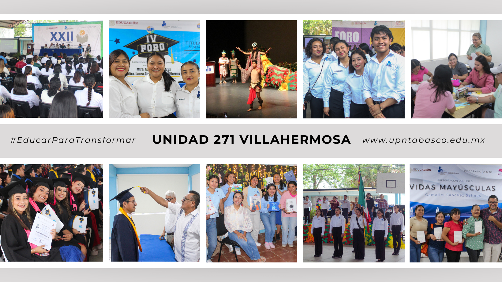
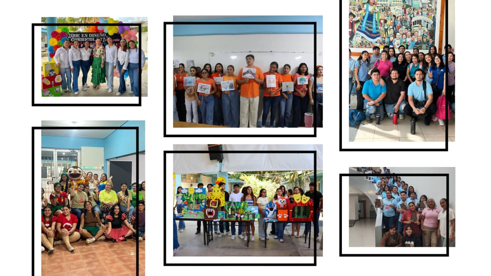
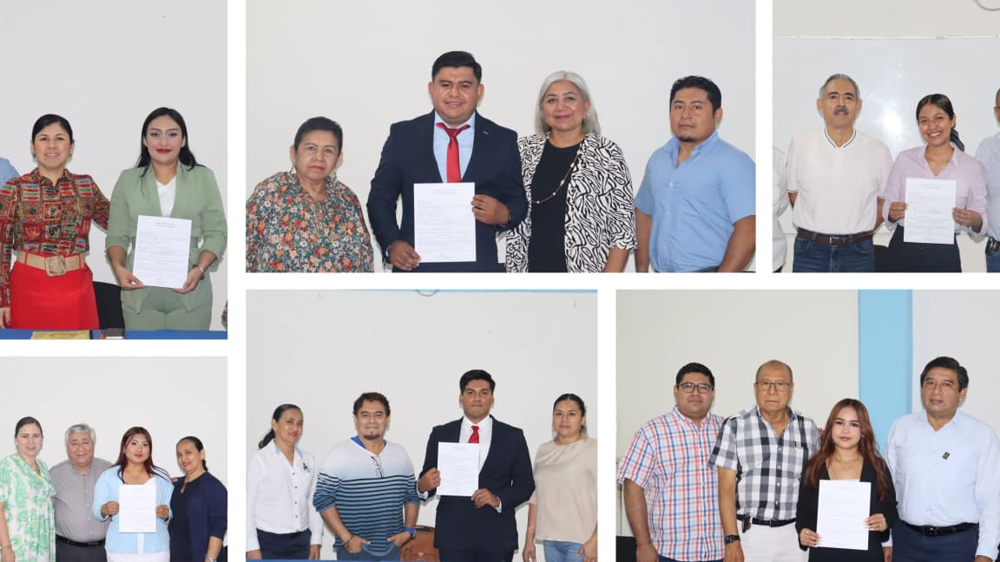

Presentación

La Maestría en Educación que ofrece la Universidad Pedagógica Nacional Unidad 271 tiene como propósito fortalecer la formación profesional de docentes en servicio y profesionales del ámbito educativo interesados en profundizar sus conocimientos teóricos, metodológicos y prácticos en el campo de la educación. Este programa de posgrado promueve el desarrollo de competencias para el análisis crítico de la realidad educativa, la generación de propuestas de intervención pedagógica y la realización de proyectos de investigación orientados a mejorar los procesos de enseñanza y aprendizaje en distintos contextos educativos. A través de una formación académica sólida, la Maestría en Educación contribuye al desarrollo de profesionales capaces de reflexionar sobre su práctica docente, innovar en los procesos educativos y participar activamente en la transformación y mejora del sistema educativo.
Proceso de ingreso y selección
1ª ETAPA
PRESENTAR EN ORIGINAL Y DOS COPIAS
- Acta de nacimiento certificada.
- Certificado de estudios terminales de Licenciatura o Normal Superior legalizado.
- Título o cédula profesional de Licenciatura o Normal Superior.
- CURP.
- Curriculum vitae sintético con fotografía. Descargar formato en Word
- Carta de exposición de motivos para estudiar la Maestría dirigida al Comité de Posgrado. Descargar formato en Word
- Dos fotografías tamaño infantil en blanco y negro o en color, papel mate, sin retoque.
- Llenar formato de pre-registro.
- Documentos digitalizados en CD (las especificaciones se proporcionarán en Servicios Escolares).
- Último talón de pago (escuelas oficiales) o constancia de ingresos mensuales (escuelas particulares).
2ª ETAPA
- Cursar un taller de 20 horas para problematizar un tema de la situación educativa de Tabasco con el propósito de convertirlo en objeto de investigación. Las sesiones se realizarán los días viernes de 15:00 a 20:00 horas y los sábados de 08:00 a 13:00 horas durante dos fines de semana.
3ª ETAPA
- Entrevista personal en la cual se realiza la defensa del tema de investigación desarrollado durante el taller y se informan los compromisos que implica cursar un posgrado en la UPN Unidad 271.
- La aceptación o no al programa se notificará vía correo electrónico.

Objetivo General
Consolidar profesionales de la educación básica en servicio, con el propósito de contribuir al desarrollo de habilidades docentes, a favor de los educandos y la sociedad, optimizando la producción de servicios educativos mediante el empleo de los recursos teóricos y metodológicos contenidos en las corrientes pedagógicas contemporáneas.
Objetivos Específicos
- Diseñar e implementar estrategias de intervención educativa basadas en el análisis de contextos socioculturales y necesidades específicas de diversos grupos y comunidades.
- Evaluar procesos, programas y prácticas educativas mediante metodologías cualitativas y cuantitativas que permitan fortalecer la toma de decisiones y mejorar la calidad educativa.
- Promover proyectos de innovación educativa que fomenten la inclusión, el desarrollo integral y la mejora continua en instituciones y espacios no formales de aprendizaje.
Perfil de Ingreso

Sólida formación en sus estudios de licenciatura Poseer experiencia en la decencia a nivel de educación básica Sentido de reflexión y autocritica Capacidad de abstracción Imaginación creativa Buen estado de salud física y mental Tener Capacidad y disposición para el trabajo de equipo
Perfil de Egreso

Habrá obtenido los conocimientos y las habilidades que le permitan fundamentar opciones metodológicas y fundamentos teóricos para desarrollar proyectos de investigación educativa. Habrá desarrollado una alta capacidad para investigar su práctica docente. Ubicará la investigación como instrumentos de aprendizaje en la práctica docente. Asesorara y realizara proyectos de investigación educativa en todas sus fases de desarrollo. Poseerá habilidades para el desarrollo del ejercicio docente y resolver problemas pedagógicos a través de diversas estrategias metodológicas. Contará con una formación didáctica que le permitirá dominar un amplio espectro de método y técnicas para la docencia a nivel pre y posgrado Establecerá soluciones a problemas científicos en el aula y la institución.
Retícula / Malla Curricular